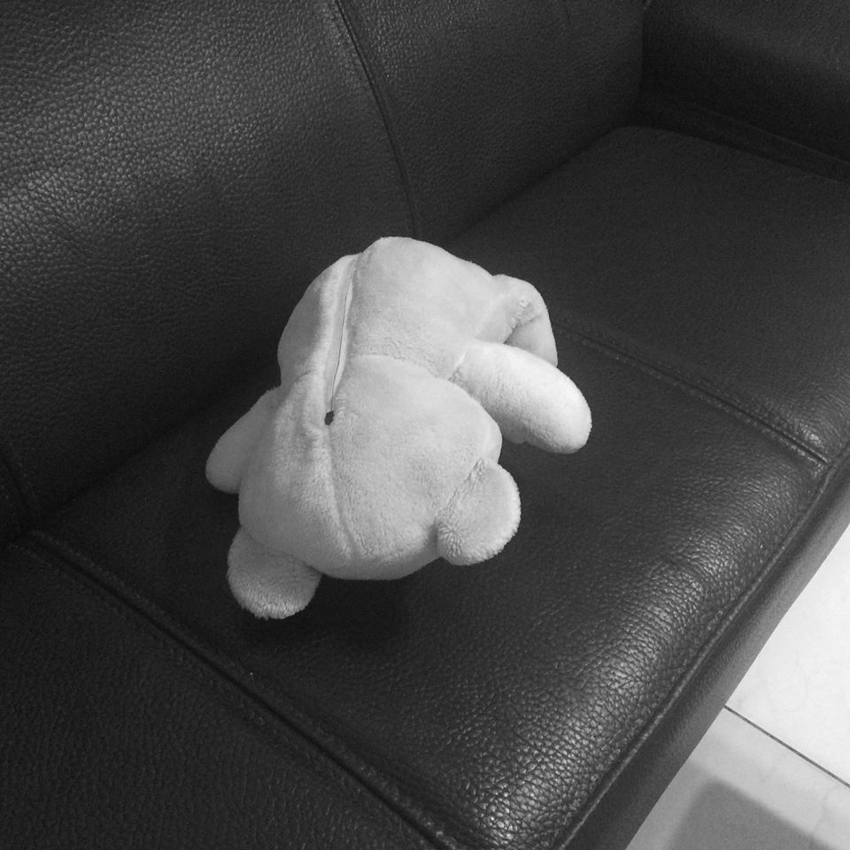

冬眠
 鳥細與他的熊被裝進水晶球裡，是寒冷的冬天，飄著雪，小屋上覆蓋一層厚厚的白色，幾棵樹屹立在屋旁。
熊在冬眠，所以鳥細不用準備牠的三餐，只要煮自己的份就好了，他吃得很簡單，大部分時間都窩在暖爐旁看書，冬天無法打獵，只能靠著存糧過活，所以能省則省。
鳥細很寂寞，存糧漸漸變少，他想著該要春天了，萬物復甦，熊會醒來和他一起玩耍，他們去打獵。
但冬天始終不走，鳥細穿上皮毛大衣，去森林深處碰運氣看有沒有木柴可撿，他的存糧和乾柴都要見底了，他才走了半公里，就撞上一面牆，透明的牆，怎麼也打不破。
去往春天的通道被堵住了。
如果是熊，一定可以輕鬆打破這片透明牆，他們就能去往春天，但熊在冬眠，不到春天，牠是不會醒的。
鳥細嘗試了所有方法，終於放棄了。
他走進熊的洞穴裡，躺在牠的肚皮裡，蜷縮成一團，輕輕唱著歌：「睡吧……睡吧……」